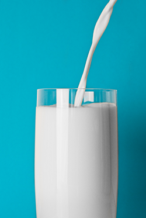
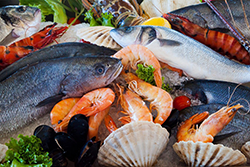
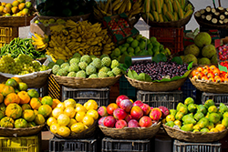

IMPORTANCE
We often asks ourselves why this is important and why we really need to life a healthy life. Your choices every day affect your health and well-being. Each day you should take a small step towards a better healhy lifestyle to benefit you. This impacts how you will feel today, tomorrow and in the future!
Why is it important?
We can all benefit from eating heathy especially starting at a young age. Controlling your weight and your lifestyle is an essential part of living. Doing so can prevent future risks that can happen such as chronic diseases, like heart disease and cancer.
MORE INFORMATION!
How to eat healthy
We often think that eating healthy is a hard task that we must do everyday but it's not! You can easily start by making the right choises and decisions of whats right to eat. Setting goals for yourself to improve your nutrition is one of the best ways to begin!
MORE INFORMATION!
SETTING GOALS
Setting small goals can help increase your health. You should always try incorporating at least 6 or more goals within your diet. Doing so helps you commit to incorportating your new diet into your lifestyle every week.
Fat-Free.
This is one of the best ways to start off in the correct direction. Switching to Fat-free milk or low fat milk can drastically help your well-being. Both have the same amount of essential nutrients as whole milk but fewer calories and saturated fat.


Meats
A lot of people really don't think about meat and neglect it when it comes to eating. While meat is one of the most important part of your meal. You have a variety of options that you should choose when it comes to your meals. Meat, poultry, seafood, dry beans or peas, eggs, nuts, and seeds are considered part of the protein foods group.
Fruits & Vegetables
Another great way to help improve your overall well-being is to make half your plate fruits and vegetables. Adding fruit and vegetables to meals will give your body more vitamins, minerals, and fiber that your body needs to be healthy.

Water
Another extremely neglected need of the human body is water. You can cut many calories by just drinking the correct amount of water throughout the day. The commonly reccomended amount of water is eight 8-ounce glasses of water, which is about 2 liters, or half a gallon.
TIPS
Eating healthy is a key to a better you! Changing your diet to more fruits, vegetables, and less processed food will boost your mood and make you feel more energized. Follow these tips and it will help you on the path to success!
No Processed Food
Eat less processed foods. By preparing your own meals you know what goes into them, making them healthier for you.
Eat Meat
Eat more fish and less dark meat. Fish contains omega oils, B12, and lots of protein while dark meat isn't as nutrient rich and often does not contain as much iron.
Drink Water
DRINK LOTS AND LOTS OF WATER! A good tip is to get yourself a good water bottle and try to drink a half gallon a day. Water flushes your system of all the toxins you've consumed, and keeps you hydrated.
Eat Vegetables
Veggies are your new best friend! Vegetables are full of fiber which keeps you full longer with less aching, thus curbing your craving for salty chips and other fatty foods.
Excess Sugar
Get rid of the excess sugar and salt in your diet. Salts and sugars come in natural foods in the right amount, so kicking out the chips and cookies will help you out.
Ditch Soda
Ditch the soda and get to brewin’. Tea is a great alternative to sugary drinks. Green tea boosts metabolism, white tea helps prevent cancer, and other teas help with things such as depression, insomnia, and digestion.